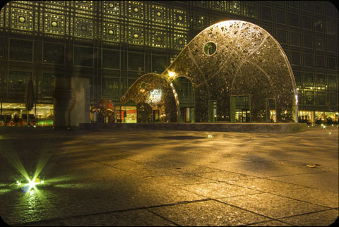

![ Institut du Monde Arabe This eye-catching metal-and-glass tower by architect Jean Nouvel cleverly uses metal diaphragms in the shape of square Arabic-style screens to work like a camera lens, opening and closing to control the flow of sunlight. The vast cultural center's layout is intended to reinterpret the traditional enclosed Arab courtyard. Inside, there are various spaces—among them a museum, inaugurated in 2012, that explores the culture and religion of the 22 Arab League member nations. With the addition of elements from the Louvre's holdings and private donors, the museum's impressive collection includes Islamic art, artifacts, ceramics, and textiles, which are displayed on four floors. There is also a performance space, a sound-and-image center, a library, and a bookstore. Temporary exhibitions usually have information and an audioguide in English. Glass elevators whisk you to the ninth floor, where you can sip mint tea in the rooftop café, Le Ziryab, while feasting on one of the best views in Paris.Contact InformationAddress: 1 rue des Fossés-St-Bernard, Latin Quarter, Paris, 75005 | Map It Phone: 01-40-51-38-38Cost: €8Hours: Tues.--Fri. 10--6, Sat.--Sun. 10--7, until 9:30 on Thurs.](preview://img/arabe_3.jpg){kind=link}
Institut du Monde Arabe
This eye-catching metal-and-glass tower by architect Jean Nouvel cleverly uses metal diaphragms in the shape of square Arabic-style screens to work like a camera lens, opening and closing to control the flow of sunlight. The vast cultural center's layout is intended to reinterpret the traditional enclosed Arab courtyard. Inside, there are various spaces—among them a museum, inaugurated in 2012, that explores the culture and religion of the 22 Arab League member nations. With the addition of elements from the Louvre's holdings and private donors, the museum's impressive collection includes Islamic art, artifacts, ceramics, and textiles, which are displayed on four floors. There is also a performance space, a sound-and-image center, a library, and a bookstore. Temporary exhibitions usually have information and an audioguide in English. Glass elevators whisk you to the ninth floor, where you can sip mint tea in the rooftop café, Le Ziryab, while feasting on one of the best views in Paris.
Contact Information
Address: 1 rue des Fossés-St-Bernard, Latin Quarter, Paris, 75005 | Map It
Phone: 01-40-51-38-38
Cost: €8
Hours: Tues.--Fri. 10--6, Sat.--Sun. 10--7, until 9:30 on Thurs.